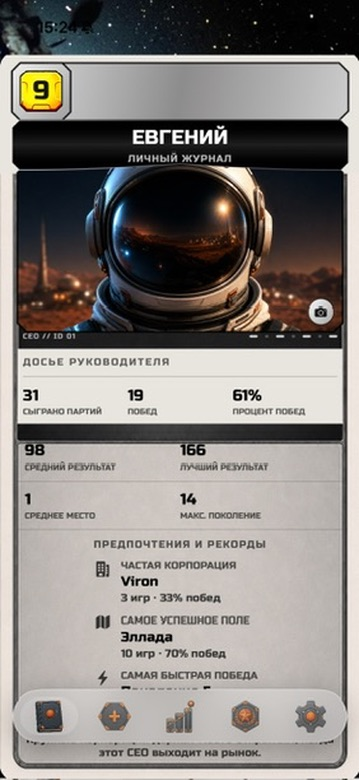
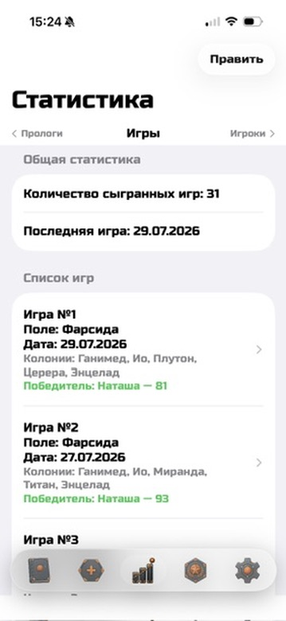
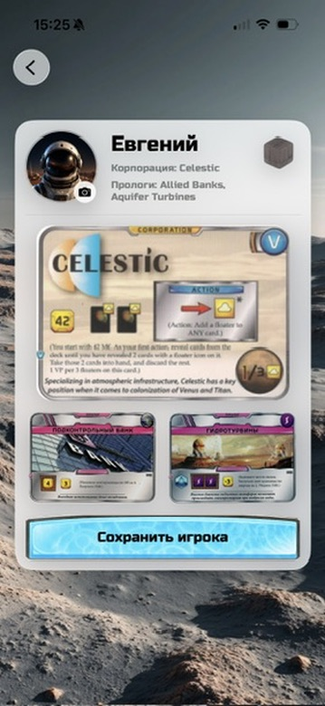
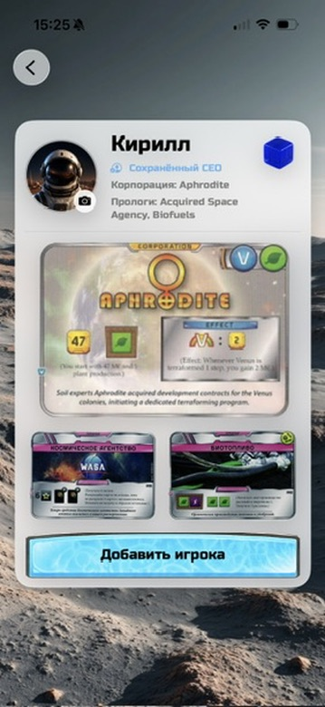
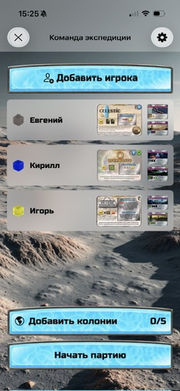
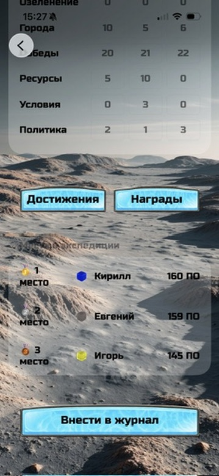

Companion app for Terraforming Mars
Your games.
Your history.
Track your games, calculate final scores, and build personal statistics — all in one private journal on your iPhone.
Free public beta · English and Russian

Mars LogBook
Your personal Mars expedition historyMade for every game night
Simple at the table.
Valuable for years.






Features
Everything important after the final generation.
- 01Score calculation
Record each scoring category in a clear flow.
- 02Game history
Keep completed games and results together.
- 03Player statistics
Discover records and long-term patterns.
- 04Local data storage
Your journal stays on your device.
- 05English & Russian
Use the app in either supported language.
Privacy
Your journal stays yours.
Mars LogBook stores game data locally on your device. No accounts, advertising, analytics, or data collection.